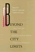

Conflicts in Urban and Regional Development,
edited by John R. Logan and Todd Swanstrom, includes books on urban
policy and issues of city and regional planning, accounts of the
political economy of individual cities, and books that compare policies
across cities and countries. |

|
In
Timber Country
Working People's Stories of Environmental Conflict and Urban
Flight
Brown, Beverly A.
336 pp • 6x9 • Spring 1995
paper 978-1-56639-273-0
cloth 978-1-56639-272-3 |
 |
Bernie Sanders and the Boundaries of Reform
Socialism in Burlington
Conroy, W. J.
With a new Preface by the Author
278 pp • 6x9 • Spring 2017
paper 978-1-4399-1480-9 |

|
The
Affordable City
Toward a Third Sector Housing Policy
edited by Davis, John Emmeus
320 pp • 6x9 • Fall 1993
cloth 978-1-56639-109-2
Excerpt available |

|
Creating
the Countryside
The Politics of Rural and Environmental Discourse
edited by DuPuis, E. Melanie and Peter Vandergeest
360 pp • 6x9 • Fall 1995
paper 978-1-56639-360-7
cloth 978-1-56639-359-1
Excerpt available |

|
Japenese
Cities in the World Economy
edited by Fujita, Kuniko and Richard Child Hill
360 pp • 6x9 • Spring 1993
cloth 978-1-56639-034-7
Excerpt available |
|
Shelter
Burden
Local Politics and Progressive Housing Policy
Goetz, Edward G.
264 pp • 5.5x8.25 • Fall 1993
cloth 978-1-56639-055-2 |

|
Separate
Societies
Goldsmith, William W. and Edward J. Blakely, foreword by
Harvey Gantt
280 pp • 5.5x8.25 • Spring 1992
paper 978-0-87722-933-9
cloth 978-0-87722-932-2 |

|
New
Homeless and Old
Community and the Skid Row Hotel
Hoch, Charles and Robert A. Slayton
312 pp • Spring 1989
paper 978-0-87722-765-6
cloth 978-0-87722-600-0 |

|
The
Suburban Racial Dilemma
Housing and Neighborhoods
Keating, W. Dennis
288 pp • 6x9 • Spring 1994
paper 978-1-56639-148-1
cloth 978-1-56639-147-4
Excerpt available |

|
Making
Equity Planning Work
Leadership in the Public Sector
Krumholz, Norman and John Forester, foreword by Alan A. Altshuler
271 pp • 6x9 • Spring 1990
paper 978-0-87722-701-4
cloth 978-0-87722-700-7 |

|
Reinventing
Cities
Equity Planners Tell Their Stories
Krumholz, Norman and Pierre Clavel
272 pp • 6x9 • Fall 1994
paper 978-1-56639-210-5
cloth 978-1-56639-209-9 |

|
The
Reconquest of Montreal
Language Policy and Social Change in a Bilingual City
Levine, Marc V.
320 pp • Spring 1990
paper 978-0-87722-899-8
cloth 978-0-87722-703-8 |
 |
Beyond
the City Limits
Urban Policy and Economics Restructuring in Comparative Perspective
edited by Logan, John R. and Todd Swanstrom
288 pp • Fall 1990
paper 978-0-87722-944-5
cloth 978-0-87722-733-5 |

|
Contested
Lands
Mason, Robert J.
256 pp • 6x9 • Spring 1992
cloth 978-0-87722-925-4 |

|
Detroit
Lives
edited by Mast, Robert H., foreword by Dan Georgakas
368 pp • 6x9 • Fall 1994
paper 978-1-56639-226-6
cloth 978-1-56639-225-9 |

|
Social
Inequality in Oaxaca
A History of Resistance and Change
Murphy, Arthur D. and Alex Stepick, foreword by Henry A. Selby
300 pp • Fall 1991
paper 978-0-87722-869-1
cloth 978-0-87722-868-4
Excerpt available |

|
Community
Builders
A Tale of Neighborhood Mobilization in Two Cities
Rabrenovic, Gordana
248 pp • 6x9 • Spring 1996
paper 978-1-56639-410-9
cloth 978-1-56639-409-3
Excerpt available |
|
From
Redlining to Reinvestment
edited by Squires, Gregory D.
288 pp • 6x9 • Fall 1992
paper 978-0-87722-985-8
cloth 978-0-87722-984-1 |

|
Defending
Community
The Struggle for Alternative Redevelopment in Cedar-Riverside
Stoecker, Randy
328 pp • 6x9 • Fall 1993
paper 978-1-56639-128-3
cloth 978-1-56639-127-6
Excerpt available |

|
Farms,
Mines, and Main Streets
Uneven Development in a Dakota County
Tauxe, Caroline S.
288 pp • 6x9 • Fall 1993
cloth 978-1-56639-070-5 |

|
Fast
Wheels, Slow Traffic
Wright, Charles L.
304 pp • 6x9 • Spring 1992
cloth 978-0-87722-911-7 |

|
Chinatown
The Socioeconomic Potential of an Urban Enclave
Zhou, Min, foreword by Alejandro Portes
316 pp • 6x9 • Spring 1992
paper 978-1-56639-337-9
cloth 978-0-87722-934-6 |